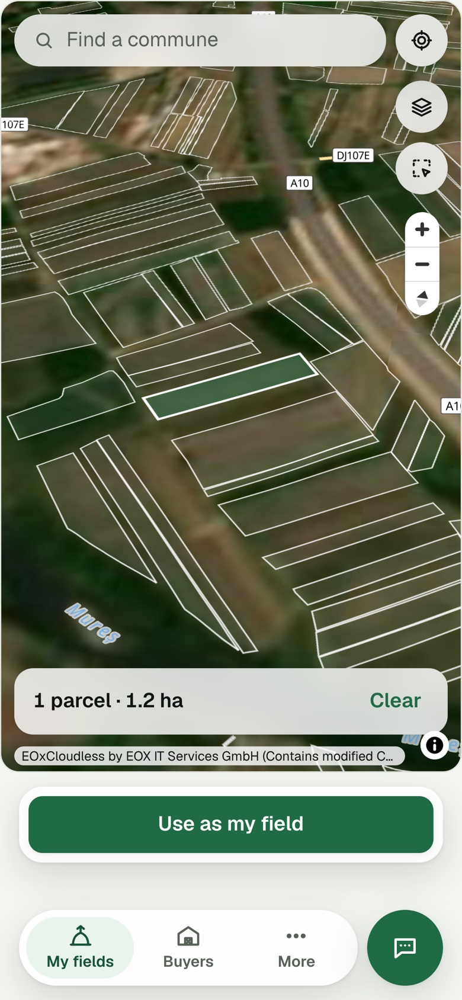
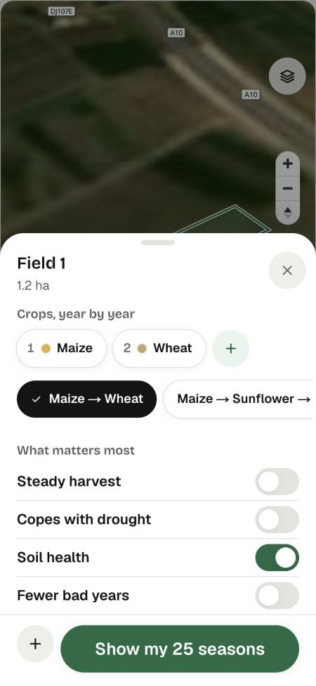
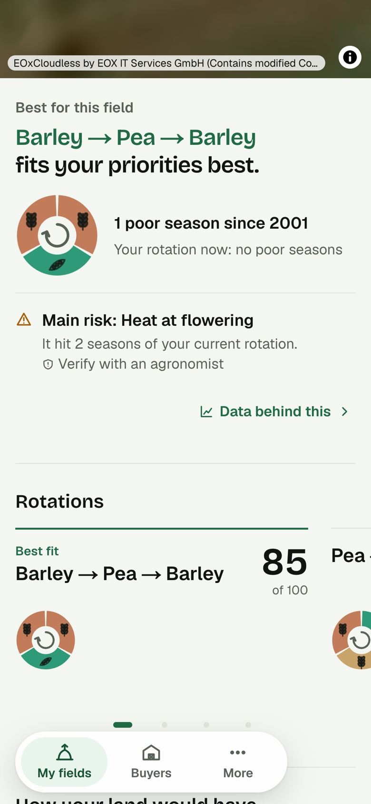
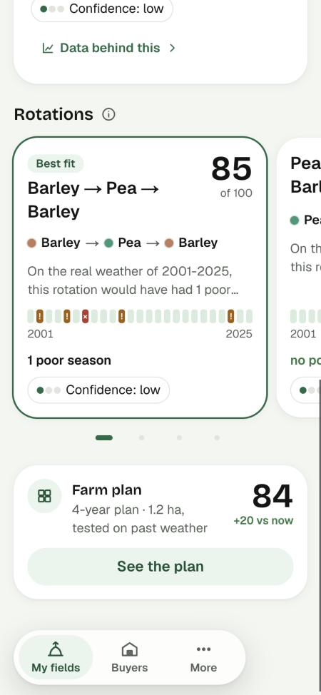
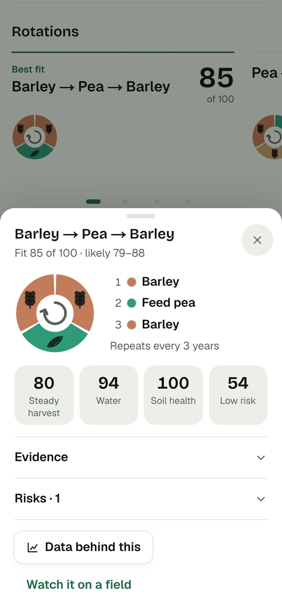
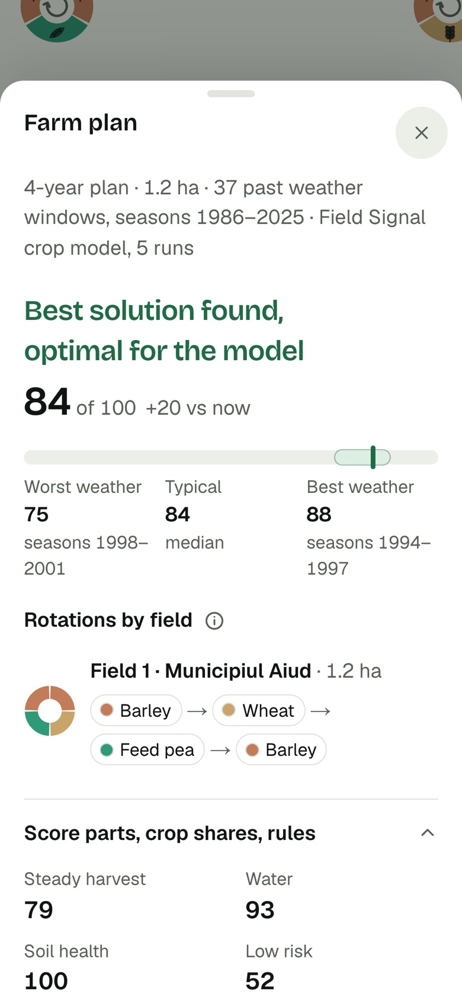

Scenario modelled on the summer-2024 drought; illustrative stocks, not Transavia's. Suppliers ranked on coverage, reliability, logistics, friction. One-click PDF report.
Does it work?
On maize, it called 3 out of 4 seasons right.
And it flagged 4 of the 5 worst droughts.
’07’12’22’24’2520012025
Called rightMissedChecked against official INS yields, Alba
Built on open data
NASA POWERMODISSMAPFIRMSSoilGridsEUCROPMAPAPIA parcelsINS yieldsEurostat GISCO
Field Signal · Farm Titans
Plant smarter. Source safer.
Before you plant, replay the past.
Live now on the web and on WhatsApp. Next: a pilot with Transavia and its farmers.
fieldsignal.land
Try it on your phone
Created at NASA Space Apps Challenge 2026 · Data: NASA POWER, MODIS, SMAP, SoilGrids · Vlad Pantiru · Bogdan David · Răzvan Bocra
−42%






Field Signal
Location: my field near Aiud
Main risk: heat when maize flowers Three rotations, scores and ranges
Why would peas do better than maize here?
Peas leave nitrogen for the next crop and are harvested before the driest weeks. That is why the rotation with peas fits your field better. Check with an agronomist.